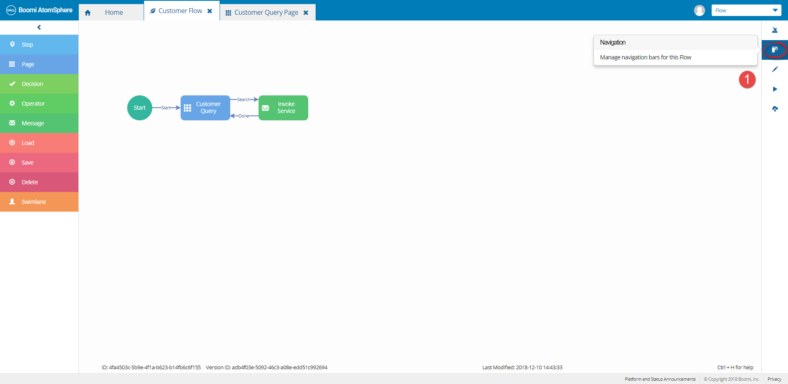
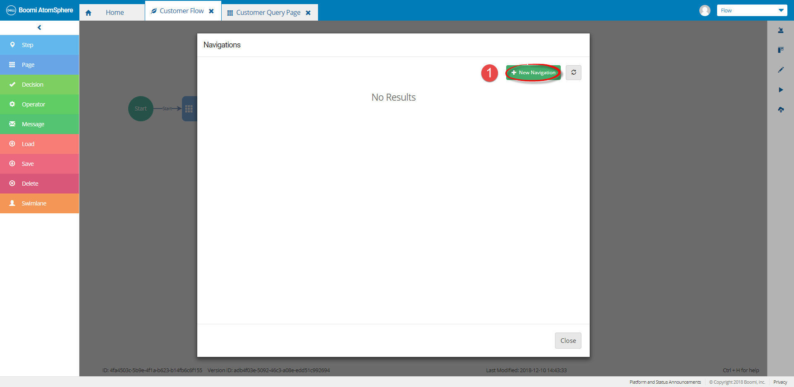
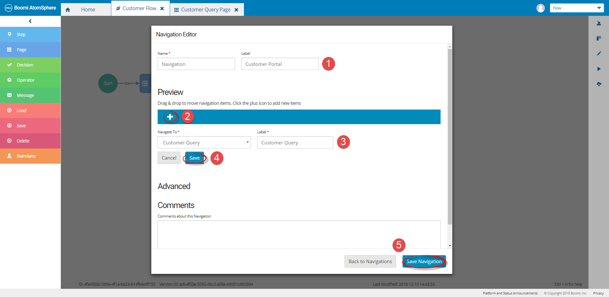
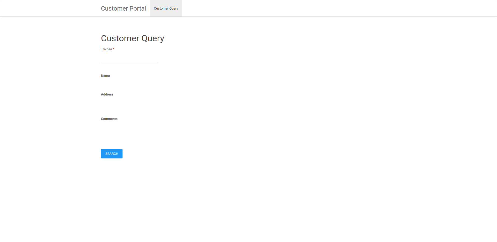
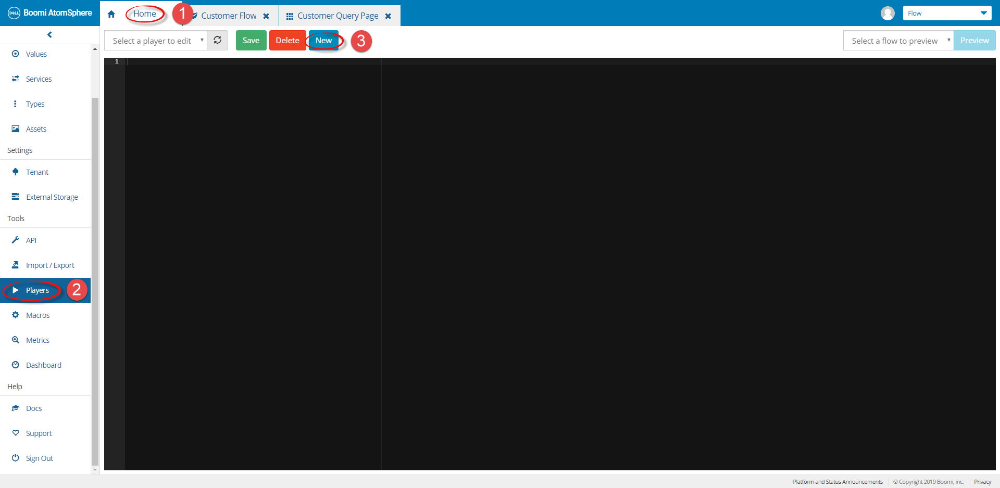
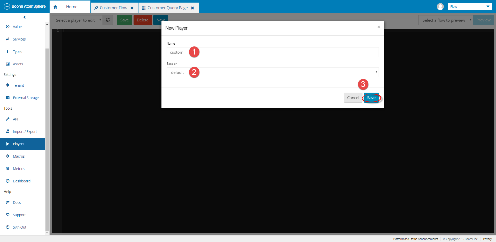
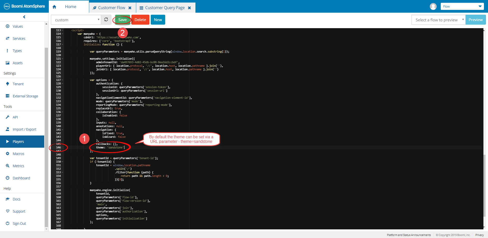
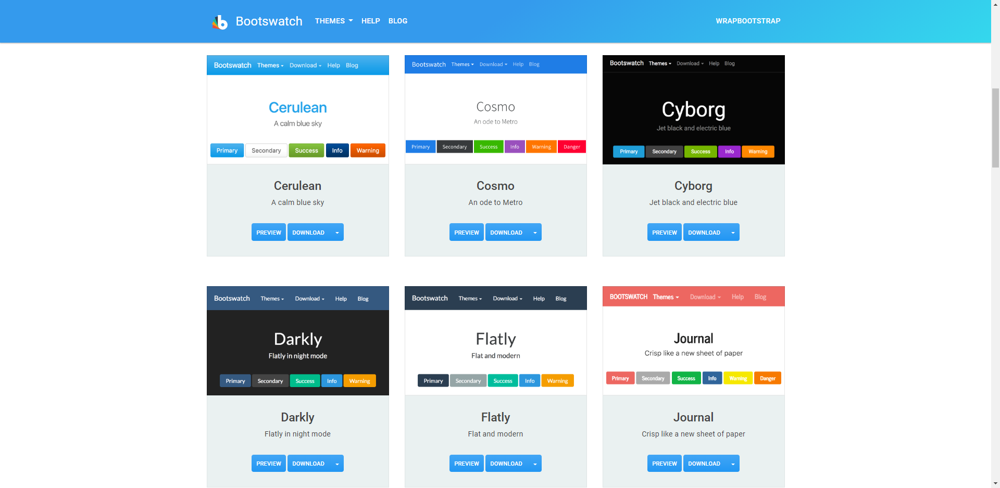
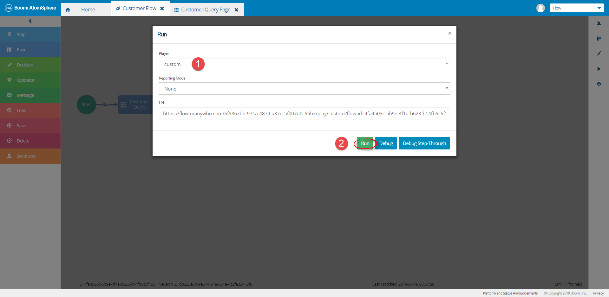
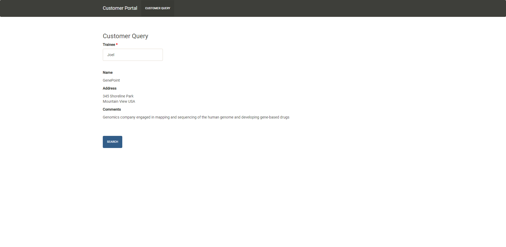

Overview
Lesson 5 - Customizing the Flow (Optional)
Lesson 5 - Customizing the Flow (Optional)
Step 1 of 2
Adding a Title & Navigation Bar
Define a New Navigation Bar


Configure the Navigation Bar

Retest the Flow

Step 2 of 2
Creating a custom player using an out of the box theme
Return to the Home screen & clone the Default player


Update the “theme” setting

Please Note: Boomi Flow embeds themes (most of them at least). You can use these as a good starting point when branding your Flow. There is also a special theme “sf1” for embedding Flow inside Salesforce.

Retest the Flow and using the new custom player

